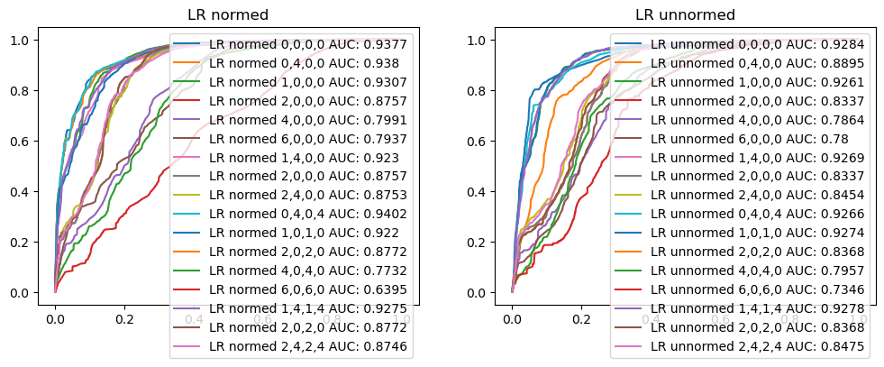
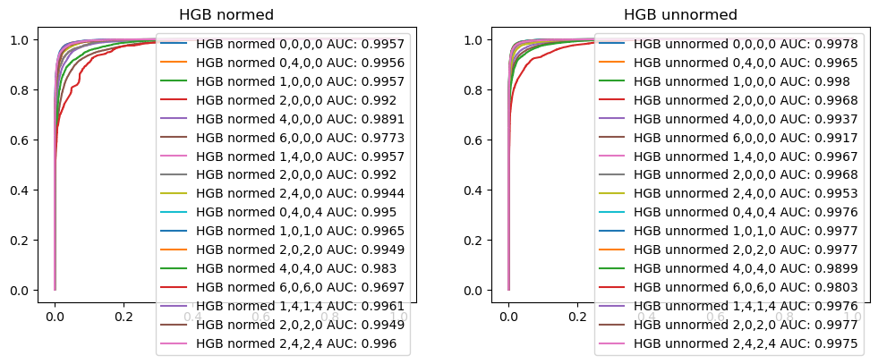
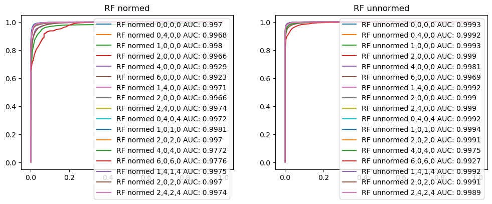

from detect_common import *7 Build models
7.1 Build models with different hyperparameters
Models to evaluate:
- LogisticRegression (only for the baseline)
- RandomForest
- HistGradientBoosting
Parameters:
- Normalization of statistical parameters (hypothesis: should decrease concept drift)
- Skip of first few packets to decrease TLS handshake influence on classification of DoH
- Try to apply weights to first few packets for calculation of mean/stdev/variance, instead of just skip
- Try to skip packets for packet sizes parameters, but don’t skip them for inter-packets duration parameters
p1version = "v6"
p2version = "v7"path_doh_ips = "./doh_resolver_ip.csv"
mix_p = pd.read_feather(f"cached/mixed.p1.{p1version}.saved")len(mix_p)350000from sklearn.model_selection import train_test_split
train, test = train_test_split(
mix_p,
test_size=0.2,
random_state=42
)
train.reset_index(drop=True).to_feather(f'cached/mixed.train.p1.{p1version}.saved')
test.reset_index(drop=True).to_feather(f'cached/mixed.test.p1.{p1version}.saved')from sklearn.ensemble import HistGradientBoostingClassifier, RandomForestClassifier
from sklearn.linear_model import LogisticRegression
from joblib import dump, load
train = pd.read_feather(f'cached/mixed.train.p1.{p1version}.saved')
for norm in [True, False]:
for hyperparam in HYPERPARAMS:
pp = PreProcessing(norm, *hyperparam)
name = (
('normed-' if norm else 'unnormed-') +
'-'.join(str(p) for p in hyperparam)
)
print(name)
clr_lr_file = f'models/LR-mix-1-p-{name}.p1.{p1version}.p2.{p2version}.joblib'
clf_hgb_file = f'models/HGB-mix-1-p-{name}.p1.{p1version}.p2.{p2version}.joblib'
clf_rf_file = f'models/RF-mix-1-p-{name}.p1.{p1version}.p2.{p2version}.joblib'
if any(not os.path.exists(fpath) for fpath in [clr_lr_file, clf_hgb_file, clf_rf_file]):
full, features, labels = pp.process(train, f"cached/mixed.train.p1.{p1version}.{name}.p2.{p2version}.saved")
pp.store_scaler(f"cached/mixed.train.p1.{p1version}.{name}.p2.{p2version}.scaler")
if not os.path.exists(clr_lr_file):
clf_lr = LogisticRegression(random_state=42, max_iter=200).fit(features, labels)
dump(clf_lr, clr_lr_file)
if not os.path.exists(clf_hgb_file):
clf_hgb = HistGradientBoostingClassifier(random_state=42, max_iter=200).fit(features, labels)
dump(clf_hgb, clf_hgb_file)
if not os.path.exists(clf_rf_file):
clf_rf = RandomForestClassifier(random_state=42).fit(features, labels)
dump(clf_rf, clf_rf_file)normed-0-0-0-0
normed-0-4-0-0
normed-1-0-0-0
normed-2-0-0-0
normed-4-0-0-0
normed-6-0-0-0
normed-1-4-0-0
normed-2-0-0-0
normed-2-4-0-0
normed-0-4-0-4
normed-1-0-1-0
normed-2-0-2-0
normed-4-0-4-0
normed-6-0-6-0
normed-1-4-1-4
normed-2-0-2-0
normed-2-4-2-4
unnormed-0-0-0-0
unnormed-0-4-0-0
unnormed-1-0-0-0
unnormed-2-0-0-0
unnormed-4-0-0-0
unnormed-6-0-0-0
unnormed-1-4-0-0
unnormed-2-0-0-0
unnormed-2-4-0-0
unnormed-0-4-0-4
unnormed-1-0-1-0
unnormed-2-0-2-0
unnormed-4-0-4-0
unnormed-6-0-6-0
unnormed-1-4-1-4
unnormed-2-0-2-0
unnormed-2-4-2-47.2 Calculate AUC for each model
from sklearn import metrics
import matplotlib.pyplot as plt
from joblib import dump, load
test = pd.read_feather(f'cached/mixed.test.p1.{p1version}.saved')
models = ["LR", "HGB", "RF"]
results = {
"model": [],
"normed": [],
"skips_and_weights": [],
"test_data_auc": [],
"fpr": [],
"tpr": [],
"thresholds": [],
}
for norm in [True, False]:
for hyperparam in HYPERPARAMS:
pp = PreProcessing(norm, *hyperparam)
name = (
('normed-' if norm else 'unnormed-') +
'-'.join(str(p) for p in hyperparam)
)
print(name)
full, features, labels = pp.process(test, f"cached/mixed.test.p1.{p1version}.{name}.p2.{p2version}.saved")
for model in models:
clf = load(f'models/{model}-mix-1-p-{name}.p1.{p1version}.p2.{p2version}.joblib')
y_pred = clf.predict_proba(features)[:, 1]
fpr, tpr, threshold = metrics.roc_curve(labels, y_pred)
auc = round(metrics.roc_auc_score(labels, y_pred), 4)
results["model"].append(model)
results["normed"].append(norm)
results["skips_and_weights"].append(hyperparam)
results["test_data_auc"].append(auc)
results["fpr"].append(fpr)
results["tpr"].append(tpr)
results["thresholds"].append(threshold)normed-0-0-0-0normed-0-4-0-0normed-1-0-0-0normed-2-0-0-0normed-4-0-0-0normed-6-0-0-0normed-1-4-0-0normed-2-0-0-0normed-2-4-0-0normed-0-4-0-4normed-1-0-1-0normed-2-0-2-0normed-4-0-4-0normed-6-0-6-0normed-1-4-1-4normed-2-0-2-0normed-2-4-2-4unnormed-0-0-0-0unnormed-0-4-0-0unnormed-1-0-0-0unnormed-2-0-0-0unnormed-4-0-0-0unnormed-6-0-0-0unnormed-1-4-0-0unnormed-2-0-0-0unnormed-2-4-0-0unnormed-0-4-0-4unnormed-1-0-1-0unnormed-2-0-2-0unnormed-4-0-4-0unnormed-6-0-6-0unnormed-1-4-1-4unnormed-2-0-2-0unnormed-2-4-2-4results_df = pd.DataFrame(results)
results_df| model | normed | skips_and_weights | test_data_auc | fpr | tpr | thresholds | |
|---|---|---|---|---|---|---|---|
| 0 | LR | True | [0, 0, 0, 0] | 0.9377 | [0.0, 0.0, 0.0, 2.440393391414696e-05, 2.44039... | [0.0, 3.445543189883885e-05, 0.000964752093167... | [1.9999996864974432, 0.9999996864974431, 0.999... |
| 1 | HGB | True | [0, 0, 0, 0] | 0.9957 | [0.0, 0.0, 0.0, 0.0, 0.0, 0.0, 0.0, 0.0, 0.0, ... | [0.0, 3.445543189883885e-05, 0.000275643455190... | [1.9998165372259558, 0.9998165372259558, 0.999... |
| 2 | RF | True | [0, 0, 0, 0] | 0.9970 | [0.0, 2.440393391414696e-05, 4.880786782829392... | [0.0, 0.07525066326706405, 0.14460944767942666... | [2.0, 1.0, 0.99, 0.98, 0.97, 0.96, 0.95, 0.94,... |
| 3 | LR | True | [0, 4, 0, 0] | 0.9380 | [0.0, 0.0, 0.0, 2.440393391414696e-05, 2.44039... | [0.0, 3.445543189883885e-05, 0.001619405299245... | [1.999995182014497, 0.9999951820144969, 0.9992... |
| 4 | HGB | True | [0, 4, 0, 0] | 0.9956 | [0.0, 0.0, 0.0, 0.0, 0.0, 0.0, 0.0, 0.0, 0.0, ... | [0.0, 3.445543189883885e-05, 0.000241188023291... | [1.9998026699943354, 0.9998026699943353, 0.999... |
| ... | ... | ... | ... | ... | ... | ... | ... |
| 97 | HGB | False | [2, 0, 2, 0] | 0.9977 | [0.0, 0.0, 0.0, 0.0, 0.0, 0.0, 0.0, 0.0, 0.0, ... | [0.0, 6.89108637976777e-05, 0.0001722771594941... | [1.9994627828151588, 0.9994627828151587, 0.999... |
| 98 | RF | False | [2, 0, 2, 0] | 0.9991 | [0.0, 0.0, 4.880786782829392e-05, 7.3211801742... | [0.0, 0.660028253454157, 0.7572270268407815, 0... | [2.0, 1.0, 0.99, 0.98, 0.97, 0.96, 0.95, 0.94,... |
| 99 | LR | False | [2, 4, 2, 4] | 0.8475 | [0.0, 0.0, 0.0, 0.0, 2.440393391414696e-05, 2.... | [0.0, 0.0008613857974709713, 0.000930296661268... | [2.0, 1.0, 0.9999999999999998, 0.9998291078664... |
| 100 | HGB | False | [2, 4, 2, 4] | 0.9975 | [0.0, 0.0, 0.0, 0.0, 0.0, 0.0, 0.0, 0.0, 0.0, ... | [0.0, 3.445543189883885e-05, 0.000379009750887... | [1.9995824205222212, 0.9995824205222211, 0.999... |
| 101 | RF | False | [2, 4, 2, 4] | 0.9989 | [0.0, 0.0, 0.0, 2.440393391414696e-05, 7.32118... | [0.0, 0.644867863418668, 0.7421355476690901, 0... | [2.0, 1.0, 0.99, 0.98, 0.97, 0.96, 0.95, 0.94,... |
102 rows x 7 columns
results_df.to_feather(f"cached/p1.{p1version}.p2.{p2version}.ft")results_df.sort_values("test_data_auc", ascending=False)| model | normed | skips_and_weights | test_data_auc | fpr | tpr | thresholds | |
|---|---|---|---|---|---|---|---|
| 83 | RF | False | [1, 0, 1, 0] | 0.9994 | [0.0, 2.440393391414696e-05, 2.440393391414696... | [0.0, 0.66943458636254, 0.7606036591668677, 0.... | [2.0, 1.0, 0.99, 0.98, 0.97, 0.96, 0.95, 0.94,... |
| 53 | RF | False | [0, 0, 0, 0] | 0.9993 | [0.0, 4.880786782829392e-05, 7.321180174244088... | [0.0, 0.6811494332081452, 0.7709402887365193, ... | [2.0, 1.0, 0.99, 0.98, 0.97, 0.96, 0.95, 0.94,... |
| 59 | RF | False | [1, 0, 0, 0] | 0.9993 | [0.0, 7.321180174244088e-05, 0.000146423603484... | [0.0, 0.6717086448678634, 0.7633256382868759, ... | [2.0, 1.0, 0.99, 0.98, 0.97, 0.96, 0.95, 0.94,... |
| 80 | RF | False | [0, 4, 0, 4] | 0.9992 | [0.0, 4.880786782829392e-05, 7.321180174244088... | [0.0, 0.6669882506977225, 0.7550218791992558, ... | [2.0, 1.0, 0.99, 0.98, 0.97, 0.96, 0.95, 0.94,... |
| 56 | RF | False | [0, 4, 0, 0] | 0.9992 | [0.0, 4.880786782829392e-05, 9.761573565658785... | [0.0, 0.6723977535058402, 0.7586741549805327, ... | [2.0, 1.0, 0.99, 0.98, 0.97, 0.96, 0.95, 0.94,... |
| ... | ... | ... | ... | ... | ... | ... | ... |
| 63 | LR | False | [4, 0, 0, 0] | 0.7864 | [0.0, 0.0, 0.0, 0.0, 0.0, 2.440393391414696e-0... | [0.0, 0.0001378217275953554, 0.000206732591393... | [2.0, 1.0, 0.9999999999999805, 0.9999999999999... |
| 66 | LR | False | [6, 0, 0, 0] | 0.7800 | [0.0, 0.0, 0.0, 2.440393391414696e-05, 2.44039... | [0.0, 3.445543189883885e-05, 0.001412672707852... | [2.0, 1.0, 0.9977177679966023, 0.9976716560895... |
| 36 | LR | True | [4, 0, 4, 0] | 0.7732 | [0.0, 0.0, 0.0, 9.761573565658785e-05, 9.76157... | [0.0, 3.445543189883885e-05, 0.000172277159494... | [2.0, 1.0, 0.9999988537637468, 0.9999979947780... |
| 90 | LR | False | [6, 0, 6, 0] | 0.7346 | [0.0, 0.0, 0.0, 7.321180174244088e-05, 7.32118... | [0.0, 3.445543189883885e-05, 0.000792474933673... | [1.9999999999998852, 0.9999999999998852, 0.985... |
| 39 | LR | True | [6, 0, 6, 0] | 0.6395 | [0.0, 0.0, 0.0, 4.880786782829392e-05, 4.88078... | [0.0, 0.00024118802329187197, 0.00037900975088... | [2.0, 1.0, 0.9999999927725642, 0.9999999777275... |
102 rows x 7 columns
from sklearn import metrics
import matplotlib.pyplot as plt
results_df = pd.read_feather(f"cached/p1.{p1version}.p2.{p2version}.ft")
# plt.figure(0).clf()
for model in models:
fig, axs = plt.subplots(ncols=2, figsize=(12, 4))
for i, norm in enumerate([True, False]):
for index, row in results_df[
(results_df["model"] == model) & (results_df["normed"] == norm)
].iterrows():
axs[i].plot(
row["fpr"],
row["tpr"],
label=f"{row['model']} {'normed' if row['normed'] else 'unnormed'} {','.join([str(i) for i in row['skips_and_weights']])} AUC: {row['test_data_auc']}",
)
axs[i].legend()
axs[i].set_title(f"{model} {'normed' if norm else 'unnormed'}")
plt.show()

